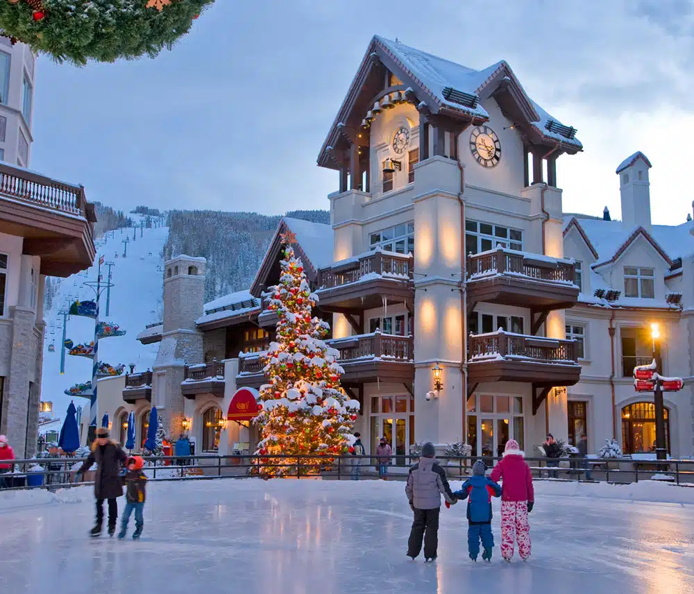

Big Sky is a community in the Rocky Mountains of southern Montana. It’s known for the ski and downhill mountain-bike trails of Big Sky Resort. Southeast of town is Yellowstone National Park, with its wildlife, hot springs and gushing geysers. To the northeast, the choppy Gallatin River cuts through the rugged Gallatin Canyon. On a tributary, Ousel Falls Park has a waterfall, picnic areas and viewpoints.